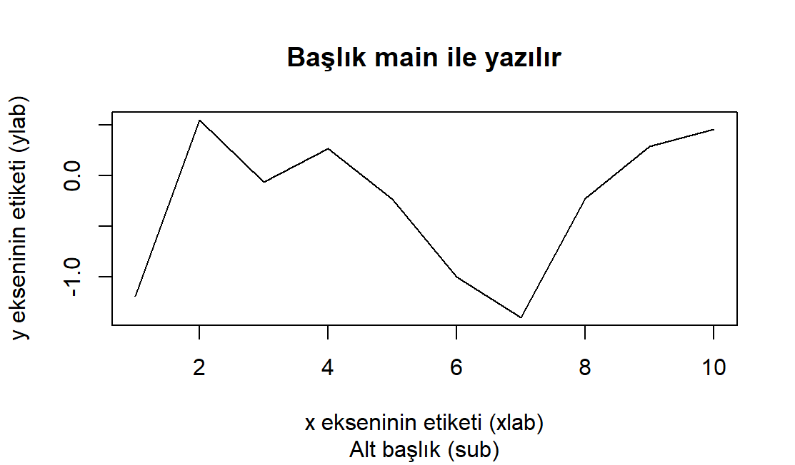
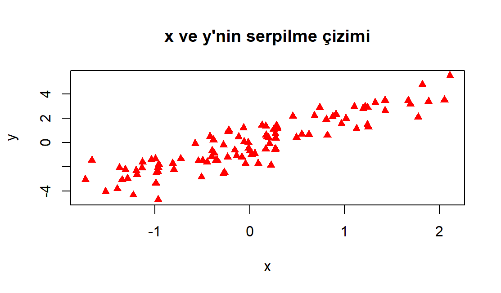
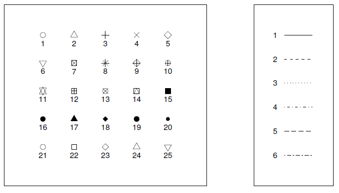
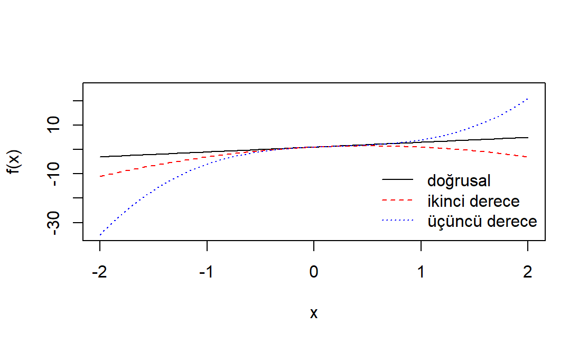
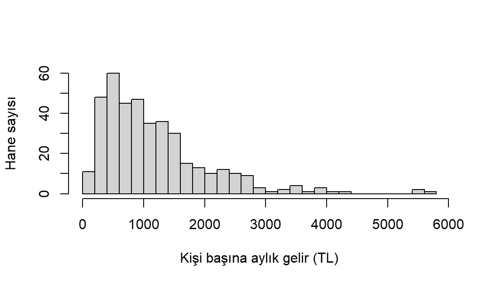

A <- 5 + 3 # toplama
B <- 5 - 3 # çıkarma
C <- 5 * 3 # çarpma
D <- 5 / 3 # bölme
E <- 5 ^ 3 # üs alma2 R Programına Giriş
Bu bölümün amacı.
Rve RStudio’yu kurup komut satırında çalışmaya başlamak- Vektör, matris, liste ve veri çerçevesi nesnelerini oluşturmak ve kullanmak
- Mantıksal işlemler, koşullu ifadeler ve döngülerle temel programlama yapmak
- Kendi fonksiyonunu yazmak, paket kurmak ve çalışma dizinini yönetmek
- Temel grafik komutlarıyla basit çizimler üretmek
R, veri analizi, grafik oluşturma ve istatistiksel hesaplamalar için tasarlanmış, açık kaynaklı bir programlama dili ve yazılım ortamıdır.1 Dünya çapında geniş bir kullanıcı ve geliştirici topluluğuna sahip olan R, farklı alanlarda kullanılmak üzere geliştirilen çok sayıda pakete sahiptir. R Projesi, R’ı yalnızca bir istatistik sistemi olarak değil, istatistiksel tekniklerin uygulanabileceği esnek bir ortam olarak tanımlamaktadır.
R paketler aracılığıyla genişletilebilen bir yapıya sahiptir. Bir R paketi, belirli bir amaç için yazılmış fonksiyonları, veri kümelerini, belgeleri ve bunları tanımlayan üstbilgi dosyalarını içeren, kurulabilir bir birimdir. R programının temel dağıtımında yer alan paketlere ek olarak, CRAN (Comprehensive R Archive Network) gibi depolardan binlerce paket kurulabilir.2 Bu paketler, istatistiksel yöntemlerin yanı sıra veri işleme ve görselleştirme için de araçlar sunar.
İzleyen alt bölümde, önce R’ın temel kurulumunu nasıl yapacağımızı göreceğiz. Ardından, R ile çalışmayı kolaylaştıran RStudio adlı Entegre Geliştirme Ortamı’nın (IDE) kurulumunu ve kullanımını ele alacağız. Bu kitapta R ile birlikte kullanacağımız RStudio, kod yazma, çalıştırma ve sonuçları takip etme gibi işlemler için çeşitli araçlar sunmaktadır.
2.1 Kurulum
R ve RStudio bilgisayarınızda yüklü değilse ya da eski versiyonları yüklüyse, aşağıdaki adımları takip ederek en güncel versiyonlarını yükleyebilirsiniz:
- Önce CRAN adresinden, https://cran.r-project.org/,
R’ın sisteminize uygun en son versiyonunu indirerek kurunuz. Kurulumdan sonra programı çalıştırdığımızdaRkomut penceresine (Console) ulaşabiliriz (bkz. Şekil 2.1)

Standart R arayüzü (R GUI) ile kod yazmak, proje hazırlamak ve yönetmek kolay değildir. Bu kitapta R’ı, R için geliştirilmiş bir entegre geliştirme ortamı (IDE) olan RStudio üzerinden kullanacağız. RStudio kod düzenleme, proje yönetimi ve rapor hazırlama gibi işleri kolaylaştırır.
RStudioprogramını geliştiren Posit şirketinin sayfasından, https://posit.co/download/rstudio-desktop/, bilgisayar sisteminize uygun sürümü indirip kurunuz.

RStudio programını çalıştırdığımızda karşımıza dört pencere çıkmaktadır (bkz. Şekil 2.2):
A penceresi: Sol altta yer alan komut satırı (console) ile programı kullanmaya başlayabiliriz. Ayrıca hata mesajları ve uyarılar da bu pencerede görülür.
B penceresi: Sol üst tarafta yer alan pencere dosya düzenleyicisidir. Bu alanda çeşitli dokümanlar oluşturabilir, komutları bir R script dosyası içinde düzenleyebilir ve kaydedebiliriz. Editör, kod tamamlama, sözdizimi vurgulama ve kod parçalarını yürütme gibi özelliklere sahiptir. Örneğin, uzantısı .R olan bir kod dosyası (script) oluşturmak için File > New File > R script adımlarını takip edebilirsiniz.
C penceresi: RStudio programının sağ üst kısmındaki pencerede mevcut çalışma oturumuna ilişkin çeşitli bilgiler, veri kümeleri ve fonksiyonlar yer almaktadır (Environment, History). Burada hafızada yer alan nesnelerin bir listesi ve özellikleri ile geçmiş komutların bir listesi yer almaktadır.
D penceresi: Sağ alt pencerede ise farklı sekmelerde dosyaların bir listesi ve özellikleri, oluşturulan grafikler, aktif olan paketlerin listesi, yardım dosyaları ve diğer bilgiler yer almaktadır (bkz. Şekil 2.2).
2.2 RStudio Komut Satırı
Alt solda (bkz. Şekil 2.2, A penceresi) yer alan R Console penceresini kullanarak doğrudan komutlarınızı çalıştırabilirsiniz. Kısa komutlar için pratik olsa da ciddi analizler için bir R Script dosyası tutmanız daha sağlıklı olacaktır.
2.2.1 Aritmetik işlemler
Komut satırında basit aritmetik işlemler kolayca yapılabilir:
Bir değeri bir nesneye atamak için <- ya da = kullanılabilir. Bu kitapta R kullanıcıları arasında yaygın olan <- işaretini kullanacağız. RStudio’da Alt ve - tuşlarına birlikte basarak bu işareti hızlıca yazabilirsiniz:
x <- A/B
print(x)[1] 42.2.2 Bilimsel gösterim
Çok büyük ya da çok küçük sayılar matematikte 10’un kuvvetleriyle yazılır. Örneğin \(0.0025 = 2.5\times 10^{-3}\) ve \(1000000 = 10^{6}\) olur. R ve diğer yazılımlar bu gösterimin ekrana yazılabilen bir biçimini kullanır: \(\times 10^{k}\) yerine ek yazılır. Buna bilimsel gösterim denir. Tablo 2.1 aynı sayıların üç farklı yazılışını göstermektedir.
| Açık gösterim | Matematiksel gösterim | R çıktısı |
|---|---|---|
| 1000000 | \(10^{6}\) | 1e+06 |
| 0.0025 | \(2.5\times 10^{-3}\) | 0.0025 |
| 0.0000015 | \(1.5\times 10^{-6}\) | 1.5e-06 |
| 0.000000000000001 | \(10^{-15}\) | 1e-15 |
Buradaki e harfi “çarpı 10 üzeri” anlamına gelir; \(e = 2.718\ldots\) sayısıyla bir ilgisi yoktur. Üs negatifse sayı 1’den küçüktür: 1e-15 sayısında ondalık ayırıcıdan sonra 14 sıfır ve ardından 1 gelir. Üs pozitifse sayı büyüktür: 1e+06, 1’in ardına 6 sıfır gelen sayıdır. R üssü iki basamakla yazar; 1.5e-06 ile 1.5e-6 aynı sayıdır. R bir sayıyı hangi biçimde yazdıracağına kendisi karar verir. Sayıyı açık gösterimle görmek için format() kullanılabilir:
1.5e-6[1] 1.5e-06format(1.5e-6, scientific = FALSE)[1] "0.0000015"2.2.3 Bilgisayarda sayıların temsili
Bilgisayar sayıları sınırlı sayıda ikili (0 ve 1) basamakla saklar. Bu yüzden 0.1 gibi sıradan bir sayı bile tam olarak saklanamaz; bilgisayarın sakladığı değer 0.1’e çok yakın bir sayıdır. Bunu görmek için sayıyı çok sayıda basamakla yazdıralım:
print(0.1, digits = 20)[1] 0.10000000000000000555Aynı durum işlemlerin sonucunda da ortaya çıkar. \(9\times 8.1 + 8.1\) işleminin sonucu 81’dir:
a <- 9*8.1 + 8.1
a # ekranda 81 görünür[1] 81a == 81 # iki eşit işareti karşılaştırma yapar[1] FALSEprint(a, digits = 17)[1] 80.99999999999998681 - a[1] 1.421085e-14Ekranda 81 görünse de saklanan değer 81 değildir. Aradaki fark 1.421085e-14, yani \(1.42\times 10^{-14} = 0.0000000000000142\) kadardır.
Bilgisayarın ayırt edebildiği farkların bir alt sınırı vardır. Makine hassasiyeti (makine epsilonu), 1’e eklendiğinde sonucu 1’den farklı kılan en küçük sayıdır:
.Machine$double.eps[1] 2.220446e-161 + 1e-17 == 1 # makine hassasiyetinden küçük bir fark: 1'den ayırt edilemez[1] TRUEBu değer yaklaşık \(2.2\times 10^{-16}\) kadardır. Bu, sayıların yaklaşık 15-16 anlamlı basamağına güvenilebileceği anlamına gelir.
Tek bir işlemdeki temsil hatası önemsizdir. Ancak bir algoritma aynı işlemi binlerce ya da milyonlarca kez tekrarladığında hatalar birikebilir. Aşağıdaki komutlar 0.1 sayısını bir milyon kez art arda toplar (for döngülerini Temel Programlama alt bölümünde ele alacağız):
toplam <- 0
for (i in 1:1000000) {
toplam <- toplam + 0.1
}
toplam # ekranda 1e+05, yani 100000 görünür[1] 1e+05toplam == 100000[1] FALSEprint(toplam, digits = 17)[1] 100000.00000133288toplam - 100000[1] 1.332883e-06Sonucun 100000 olması gerekirdi. Her toplamadaki küçük hata birikmiş ve fark yaklaşık \(1.3\times 10^{-6}\), yani 0.0000013 düzeyine çıkmıştır. Bu, tek bir işlemdeki hatadan çok daha büyüktür.
Hatanın büyüyebildiği bir başka durum, birbirine çok yakın iki sayının farkının alınmasıdır. \(1 + 10^{-15}\) sayısından 1 çıkarıldığında sonucun \(10^{-15}\) olması gerekir:
(1 + 1e-15) - 1[1] 1.110223e-15Sonuç \(1.11\times 10^{-15}\) çıkmıştır; hata, olması gereken değerin yaklaşık yüzde 11’i kadardır. \(1 + 10^{-15}\) sayısı saklanırken oluşan çok küçük hata, fark alındığında elde edilen küçük sonucun önemli bir parçası hâline gelir.
Temsil hatası istatistiksel hesaplamalarda da karşımıza çıkar. Bir veri kümesindeki gözlemlerin ortalamadan farklarının toplamı matematiksel olarak her zaman sıfırdır; bu özelliği Sayısal Özet Ölçüleri bölümünde göstereceğiz (bkz. Bölüm 5). Bunu bilgisayarda hesaplayalım:
v <- c(1.2, 3.4, 5.1, 2.8, 4.6)
sum(v - mean(v))[1] -4.440892e-16sum(v - mean(v)) == 0[1] FALSESonuç sıfır değil, \(-4.4\times 10^{-16}\) gibi çok küçük bir sayıdır. Bir çıktıda sıfır olması gereken yerde -4.440892e-16 gibi bir değer gördüğünüzde bunun bir hesap hatası değil, temsil hatası olduğunu bilmelisiniz. İki sayının pratikte eşit olup olmadığını sınamak için küçük farkları tolere eden all.equal() fonksiyonu kullanılır:
all.equal(sum(v - mean(v)), 0)[1] TRUEall.equal(a, 81)[1] TRUESon olarak, bilgisayarın gösterebildiği sayıların bir de en büyük ve en küçük değer sınırları vardır. Bu sınırların aşılması (taşma ya da overflow ve alttan taşma ya da underflow) temsil hatasından farklı bir konudur ve bu kitapta ayrıntısına girmeyeceğiz.
2.2.4 Yerleşik sabitler ve fonksiyonlar
R’da matematiksel sabitler ve fonksiyonlar hazır olarak tanımlıdır. log() öntanımlı olarak doğal logaritmayı hesaplar; 10 ve 2 tabanlı logaritmalar için log10() ve log2() kullanılır:
pi[1] 3.141593e <- exp(1) # e sayısı
e[1] 2.718282log(e)[1] 1log10(100)[1] 2log2(16)[1] 4R’da bazı özel değerler de tanımlıdır: Inf ve -Inf artı ve eksi sonsuzu, NaN (not a number) tanımsız bir işlemin sonucunu, NA (not available) ise eksik bir değeri gösterir:
1/0[1] Inf0/0[1] NaN2.3 R’da Nesneler
R’da her şey bir nesnedir (object) ve tüm işlemler bu nesneleri üzerinden yapılır. Nesne temelli yaklaşım, veri analizi ve istatistiksel modelleme için doğal bir çerçeve sunmaktadır. Nesneler, sayılar, vektörler, matrisler, veri çerçeveleri, fonksiyonlar gibi veri yapılarını temsil edebilir.
R nesne tanımında büyük-küçük harf ayırımı yapar, yani x ve X farklı nesnelerdir. Hafızadaki tüm nesneleri görmek için ls() komutu kullanılabilir:
ls() # ya da objects()Bu bölümdeki komutları sırayla çalıştırdıysanız çıktıda A, B, C, D, E, a, e, i, toplam, v ve x nesnelerini görürsünüz.
Mevcut oturumda aktif olan nesnelerin listesine ulaşmak için RStudio’da sağ üst pencerede Environment sekmesine bakılabilir. rm(x) komutu x nesnesini hafızadan siler. Tüm nesneleri silmek istersek
rm(list=ls())
ls()komutunu kullanabiliriz.
Nesne isimleri rakamla başlayamaz, virgül ve boşluk içeremez (nokta içerebilir). Örnek olarak komut satırında aşağıdaki işlemleri yapınız:
2nesne <- c(10, 20)Bu işlem hata verecektir: Error: unexpected symbol in "2nesne". Nesne isimlerinin rakamla başlayamayacağını belirtmiştik.
nesne2 <- c(10, 20)
nesne2[1] 10 20Bunun dışında nesnelerin isimlendirilmesinde bir zorunluluk yoktur. Ancak isimlendirmelerde kodun anlaşılır ve kolayca düzenlenebilir olmasına dikkat etmek faydalı olacaktır. Nesnelerin isimlerinin içeriklerini açık ve anlaşılır şekilde yansıtmasına dikkat edilebilir. Nesnelerin isimlendirilmesinde yaygın kullanılan örnekler şunlardır:
yeni_bir_nesne <- nesne2 * 5 # alt çizgiyle (snake_case)
YeniBirNesne <- nesne2 * 5 # büyük harflerle (CamelCase)
yeni.bir.nesne <- nesne2 * 5 # noktayla
yeni_bir_nesne[1] 50 100R’da temel nesne türleri şunlardır:
- Vektör: sayısal (reel sayı ya da tamsayı), karakter, mantıksal
- Faktör (kategorik değişkenler için)
- Matris
- Liste
- Veri çerçevesi (data frame)
R’da bir nesnenin sınıfını ve türünü öğrenmek için class() ve typeof() fonksiyonları kullanılabilir:
class(yeni_bir_nesne)[1] "numeric"typeof(yeni_bir_nesne)[1] "double"2.4 Vektörler
Bir R vektörü aynı türden değerlerin bir araya geldiği bir nesnedir. Vektörler sayısal, karakter ya da mantıksal değerler içerebilir, ama bir vektörün bütün elemanları aynı türde olmalıdır.
2.4.1 Sayısal vektörler
Vektör oluşturmanın en kolay yolu c() fonksiyonudur:
a <- c(1, 2, 3, 4, 5) # bir sayısal vektör oluştur
typeof(a) # vektörün türü[1] "double"b <- rep(1, 5) # tüm elemanları 1 olan 5 elemanlı bir vektör
a + b # işlemler eleman eleman yapılır[1] 2 3 4 5 6typeof() sonucunun "double", yani reel sayı olduğuna dikkat ediniz; R sayıları öntanımlı olarak bu türde saklar.
Vektörün öğelerine isim verilebilir. Örneğin skor vektörü bir ürünün 10 denek tarafından 100 üzerinden değerlendirilmesini göstersin. Altıncı deneğin değerlendirmesi eksiktir ve NA ile gösterilmiştir:
skor <- c("Denek 1" = 80, "Denek 2" = 65, "Denek 3" = 78, "Denek 4" = 94, "Denek 5" = 100, "Denek 6" = NA, "Denek 7" = 55, "Denek 8" = 85, "Denek 9" = 88, "Denek 10" = 75)
skor Denek 1 Denek 2 Denek 3 Denek 4 Denek 5 Denek 6 Denek 7 Denek 8
80 65 78 94 100 NA 55 85
Denek 9 Denek 10
88 75 names(skor) [1] "Denek 1" "Denek 2" "Denek 3" "Denek 4" "Denek 5" "Denek 6"
[7] "Denek 7" "Denek 8" "Denek 9" "Denek 10"Yaygın kullanılan sayısal vektör fonksiyonları şunlardır:
# vektörün eleman sayısı
length(a) # ya da NROW(a)[1] 5# sırala
sort(skor) # öntanımlı: küçükten büyüğe; NA değerler atılır Denek 7 Denek 2 Denek 10 Denek 3 Denek 1 Denek 8 Denek 9 Denek 4
55 65 75 78 80 85 88 94
Denek 5
100 # en büyük eleman
max(a)[1] 5# en küçük eleman
min(a)[1] 1# elemanların toplamı
sum(a)[1] 15# elemanların çarpımı
prod(a)[1] 120# Tüm elemanları a olan n-vektör: rep(a, n)
rep(1,10) [1] 1 1 1 1 1 1 1 1 1 1# seq(T): 1'den T'ye tamsayı dizisi
seq(10) [1] 1 2 3 4 5 6 7 8 9 10# seq(t,T) t'den T'ye tamsayı dizisi
seq(5,10)[1] 5 6 7 8 9 10# seq(t,T,s) t'den T'ye s artışla tamsayı dizisi
seq(1,10,2)[1] 1 3 5 7 9Bir vektörün elemanlarına ulaşmak için [ ] ile pozisyonu (indeksi) bildirmemiz gerekir. İlk elemanın indeksi 1’dir:
# birinci eleman
skor[1]Denek 1
80 Belirli bir aralıktaki elemanları seçmek için:
# 2-4 elemanlar
skor[2:4]Denek 2 Denek 3 Denek 4
65 78 94 # son eleman
n <- length(skor)
skor[n]Denek 10
75 # son 3 eleman
skor[(n-2):n] Denek 8 Denek 9 Denek 10
85 88 75 Son örnekteki parantezler önemlidir (bkz. Alıştırma 2.2).
2.4.2 Karakter vektörleri
R’da karakter vektörleri metin tabanlı verileri saklamak için kullanılır. İstatistikte bunlara çoğunlukla kategorik değişkenleri, grup adlarını ve etiketleri tutmak için ihtiyaç duyarız.
Bir karakter vektörü oluşturmak için yine c() fonksiyonu kullanılır. Her eleman tırnak içinde yazılır, çift tırnak " " ya da tek tırnak ' ' fark etmez.
isimler <- c("Ahmet", "Burcu", "Cem")
isimler[1] "Ahmet" "Burcu" "Cem" typeof(isimler)[1] "character"Bir vektörün yalnızca tek türde değer tutabildiğini hatırlayınız. Sayı ile metni aynı vektöre koymaya çalışırsanız R hepsini metne çevirir.
karisik <- c(1, 2, "üç")
karisik[1] "1" "2" "üç"typeof(karisik)[1] "character"Burada 1 ve 2 sayı olmaktan çıkıp "1" ve "2" metnine dönüşmüştür. Bu sessiz dönüşüm, veri okurken sık karşılaşılan bir hata kaynağıdır. Sayısal olması gereken bir sütun metne dönüşmüşse üzerinde aritmetik işlem yapılamaz.
Metin parçalarını birleştirmek için paste() kullanılır. Bu fonksiyonu kitap boyunca grafik başlıkları ve etiketler oluştururken kullanacağız.
paste("Grup", c("A", "B", "C")) # araya boşluk koyar[1] "Grup A" "Grup B" "Grup C"paste0("x", 1:3) # boşluk koymaz[1] "x1" "x2" "x3"
Notİleri okuma: metin işleme
R’ın metin üzerinde çalışan zengin bir fonksiyon kümesi vardır. nchar() karakter sayısını verir, substr() bir parçayı ayıklar, sub() ve gsub() değiştirme yapar, grep() ve grepl() arama yapar.
Bu kitapta bu fonksiyonlara ihtiyaç duymayacağız, o yüzden burada ele almıyoruz. Metin verisiyle çalışmanız gerekirse ders notlarındaki ilgili bölüme bakabilirsiniz: https://htastan.github.io/R-Giris/R-Base.html#R-kar-vek
2.4.3 Mantıksal vektörler
Mantıksal değerler TRUE (doğru) ve FALSE (yanlış) ile gösterilir. TRUE ve FALSE yerleşik isimlerdir, kullanıcılar tarafından değiştirilemez. Bunların kısaltması olarak kullanılabilen T ve F ise sıradan nesne adlarıdır ve üzerlerine başka bir değer atanabilir. Bu yüzden kodda her zaman TRUE ve FALSE yazmak daha güvenlidir.
Karşılaştırma işlemcileri (==, !=, >, <, >=, <=) bir vektörün her elemanını ayrı ayrı karşılaştırır ve sonuç olarak bir mantıksal vektör döndürür:
a[1] 1 2 3 4 5a >= 3 # 3'e eşit ya da 3'ten büyük mü?[1] FALSE FALSE TRUE TRUE TRUEArka planda TRUE 1, FALSE ise 0 değerine karşılık gelir. Bu yüzden bir mantıksal vektörün toplamı, koşulu sağlayan eleman sayısını verir:
sum(a >= 3)[1] 3Mantıksal vektörlerle aritmetik işlem yaparken işlem sırasına dikkat edilmelidir:
# parantez içinde mantıksal karşılaştırma:
1-(a<=3)[1] 0 0 0 1 1Parantez içindeki karşılaştırma önce yapılır. Parantezi kaldırırsak aritmetik işlem önce yapılır ve (1-a) <= 3 hesaplanır:
1-a<=3[1] TRUE TRUE TRUE TRUE TRUEBütün değerler TRUE çıkar; bu istediğimiz sonuç değildir. İşlem önceliğinden emin olmadığınızda parantez kullanmak en güvenli yoldur.
Mantıksal vektörler, bir koşulu sağlayan elemanları seçmek için de kullanılır (logical subscripting). skor vektöründe 70’ten küçük değerleri bulalım:
dusuk_skorlar <- skor < 70
dusuk_skorlar Denek 1 Denek 2 Denek 3 Denek 4 Denek 5 Denek 6 Denek 7 Denek 8
FALSE TRUE FALSE FALSE FALSE NA TRUE FALSE
Denek 9 Denek 10
FALSE FALSE skor[dusuk_skorlar]Denek 2 <NA> Denek 7
65 NA 55 Denek 6’nın skoru eksik olduğu için karşılaştırmanın sonucu da NA olur ve bu eleman çıktıda NA olarak yer alır.
Eksik değerleri bulmak için is.na() fonksiyonu kullanılır. ! işareti olumsuzlama anlamına gelir; !is.na(skor) eksik olmayan elemanları seçer:
is.na(skor) Denek 1 Denek 2 Denek 3 Denek 4 Denek 5 Denek 6 Denek 7 Denek 8
FALSE FALSE FALSE FALSE FALSE TRUE FALSE FALSE
Denek 9 Denek 10
FALSE FALSE skor2 <- skor[!is.na(skor)]
skor2 Denek 1 Denek 2 Denek 3 Denek 4 Denek 5 Denek 7 Denek 8 Denek 9
80 65 78 94 100 55 85 88
Denek 10
75 Eksik gözlemleri silmek için na.omit() fonksiyonu da kullanılabilir.
2.5 Matrisler
Matris, aynı türde değerlerin satırlar ve sütunlar hâlinde düzenlendiği iki boyutlu bir nesnedir. R’da matris oluşturmanın en kolay yolu matrix() fonksiyonudur. Örneğin skor vektöründen \(10\times 1\) boyutlu bir matris oluşturalım:
A <- matrix(data = skor, nrow = 10, ncol = 1)
dim(A) # boyutlar: satır sayısı ve sütun sayısı[1] 10 1Satırlara ve sütunlara isim verebiliriz:
rownames(A) <- names(skor)
colnames(A) <- "skor"
A skor
Denek 1 80
Denek 2 65
Denek 3 78
Denek 4 94
Denek 5 100
Denek 6 NA
Denek 7 55
Denek 8 85
Denek 9 88
Denek 10 75matrix() değerleri öntanımlı olarak sütun sütun yerleştirir. Değerleri satır satır yerleştirmek için byrow = TRUE argümanı kullanılır:
B <- matrix(1:10, nrow = 5, ncol = 2) # sütun sütun
BB <- matrix(1:10, nrow = 5, ncol = 2, byrow = TRUE) # satır satır
B [,1] [,2]
[1,] 1 6
[2,] 2 7
[3,] 3 8
[4,] 4 9
[5,] 5 10BB [,1] [,2]
[1,] 1 2
[2,] 3 4
[3,] 5 6
[4,] 7 8
[5,] 9 10Matrisin devriği (transpozesi) t() fonksiyonuyla bulunur:
t(B) [,1] [,2] [,3] [,4] [,5]
[1,] 1 2 3 4 5
[2,] 6 7 8 9 10Matrisin elemanlarına [satır, sütun] biçiminde erişilir. İndekslerden biri boş bırakılırsa o boyutun tamamı seçilir:
B[2, 1] # 2. satır, 1. sütundaki eleman[1] 2B[2, ] # 2. satırın tamamı[1] 2 7B[, 2] # 2. sütunun tamamı[1] 6 7 8 9 10Matris oluşturmanın başka bir yolu, vektörleri sütun olarak (cbind()) ya da satır olarak (rbind()) birleştirmektir:
cbind(b, a) b a
[1,] 1 1
[2,] 1 2
[3,] 1 3
[4,] 1 4
[5,] 1 5rbind(b, a) [,1] [,2] [,3] [,4] [,5]
b 1 1 1 1 1
a 1 2 3 4 5Şimdi bireylerin cinsiyetini içeren bir karakter vektörü oluşturalım ve table() ile her kategoride kaç kişi olduğunu sayalım:
cinsiyet <- c("Kadın", "Erkek", "Kadın", "Kadın", "Erkek",
"Kadın", "Erkek", "Erkek", "Kadın", "Kadın")
table(cinsiyet)cinsiyet
Erkek Kadın
4 6 Burada cinsiyet kategorik (nitel) bir değişkendir. Skor ve cinsiyet bilgisini cbind() ile yan yana koyarsak ilginç bir şey olur:
x <- cbind(skor, cinsiyet)
x skor cinsiyet
Denek 1 "80" "Kadın"
Denek 2 "65" "Erkek"
Denek 3 "78" "Kadın"
Denek 4 "94" "Kadın"
Denek 5 "100" "Erkek"
Denek 6 NA "Kadın"
Denek 7 "55" "Erkek"
Denek 8 "85" "Erkek"
Denek 9 "88" "Kadın"
Denek 10 "75" "Kadın" Sayılar da dahil bütün elemanlar metne dönüşmüştür. Vektörler gibi matrisler de yalnızca tek türde değer tutabilir. Farklı türde sütunları bir arada tutmak için izleyen alt bölümlerde göreceğimiz listeleri ve veri çerçevelerini kullanırız.
2.6 Listeler
Vektörler yalnızca tek türde değer tutabilir. Bir liste ise bu kısıtı kaldırır. Farklı türde, farklı uzunlukta, hatta farklı boyutta nesneleri bir arada tutabilir.
liste1 <- list(numaralar = seq(10, 20, 3),
isimler = c("Ahmet", "Burcu", "Hasan"),
birim_mat = diag(4))
liste1$numaralar
[1] 10 13 16 19
$isimler
[1] "Ahmet" "Burcu" "Hasan"
$birim_mat
[,1] [,2] [,3] [,4]
[1,] 1 0 0 0
[2,] 0 1 0 0
[3,] 0 0 1 0
[4,] 0 0 0 1Listenin bileşenlerinin adlarına names() ile ulaşılır.
names(liste1)[1] "numaralar" "isimler" "birim_mat"Belirli bir bileşene liste$bilesen biçiminde erişilir. Erişilen şey yine bir nesnedir, dolayısıyla üzerinde her zamanki işlemler yapılabilir.
liste1$numaralar[1] 10 13 16 19liste1$numaralar[1][1] 10dim(liste1$birim_mat)[1] 4 4Listeler doğrudan çok kullanılmaz ama önemlidirler, çünkü bir sonraki alt bölümde göreceğimiz veri çerçevesi aslında özel bir listedir. R’daki birçok fonksiyon da sonuçlarını liste olarak döndürür; örneğin t.test() çıktısı bir listedir ve test istatistiğine $statistic ile ulaşılır.
2.7 Veri Çerçeveleri (Data Frames)
Veri çerçevesi, istatistiksel çalışmada en çok kullanacağımız nesnedir. Kitabın geri kalanındaki neredeyse bütün veriler veri çerçevesi olarak saklanır.
Tanımı basittir. Veri çerçevesi, bileşenlerinin hepsi aynı uzunlukta vektör olan bir listedir. Sütunlar farklı türde olabilir, ama hepsi aynı sayıda öğe içerir. Bu yapı istatistiksel veriye birebir uyar: satırlar gözlem birimlerini, sütunlar değişkenleri temsil eder.
2.7.1 Veri çerçevesi oluşturmak
Elimizdeki vektörleri data.frame() ile bir araya getirebiliriz.
veri1 <- data.frame(skor, cinsiyet)
head(veri1) skor cinsiyet
Denek 1 80 Kadın
Denek 2 65 Erkek
Denek 3 78 Kadın
Denek 4 94 Kadın
Denek 5 100 Erkek
Denek 6 NA Kadın2.7.2 Veri çerçevesini tanımak
Yeni bir veri kümesiyle karşılaştığınızda ilk yapılacak şey onu tanımaktır. Üç fonksiyon bu iş için yeterlidir.
dim(veri1) # kaç satır, kaç sütun[1] 10 2names(veri1) # sütun adları[1] "skor" "cinsiyet"str(veri1) # yapı: her sütunun türü ve ilk değerleri'data.frame': 10 obs. of 2 variables:
$ skor : num 80 65 78 94 100 NA 55 85 88 75
$ cinsiyet: chr "Kadın" "Erkek" "Kadın" "Kadın" ...str() özellikle önemlidir. Her sütunun türünü gösterir; sayısal olması gereken bir sütunun metne dönüşmüş olduğunu buradan fark edersiniz.
summary() ise her sütunun özetini verir. Sayısal sütunlar için beş sayı özeti ve ortalama, metin sütunları için yalnızca uzunluk bilgisi gelir.
summary(veri1) skor cinsiyet
Min. : 55 Length:10
1st Qu.: 75 Class :character
Median : 80 Mode :character
Mean : 80
3rd Qu.: 88
Max. :100
NA's :1 Çıktıda skor sütununda bir NA bulunduğuna dikkat ediniz. Eksik gözlemler R’da NA ile gösterilir ve summary() bunları ayrıca raporlar.
2.7.3 Sütun seçmek
Bir sütuna erişmenin en yaygın yolu $ işaretidir. Bu gösterimi kitap boyunca sürekli kullanacağız.
veri1$skor [1] 80 65 78 94 100 NA 55 85 88 75mean(veri1$skor, na.rm = TRUE)[1] 80na.rm = TRUE argümanına dikkat ediniz. Veride en az bir NA varsa mean() varsayılan olarak NA döndürür; bu argüman eksik gözlemleri hesap dışında bırakır.
2.7.4 Satır ve sütun seçmek
Veri çerçevesi iki boyutlu olduğu için köşeli parantez içinde iki indeks alır: veri[satır, sütun]. Biri boş bırakılırsa o boyutun tamamı seçilir.
veri1[1, ] # birinci satır, bütün sütunlar skor cinsiyet
Denek 1 80 Kadınveri1[, "skor"] # skor sütununun tamamı [1] 80 65 78 94 100 NA 55 85 88 75veri1[1:3, ] # ilk üç satır skor cinsiyet
Denek 1 80 Kadın
Denek 2 65 Erkek
Denek 3 78 Kadın2.7.5 Satır filtrelemek
Mantıksal vektörler burada işe yarar. Köşeli parantezin satır kısmına bir koşul yazarsanız yalnızca koşulu sağlayan satırlar seçilir.
veri1[veri1$cinsiyet == "Kadın", ] skor cinsiyet
Denek 1 80 Kadın
Denek 3 78 Kadın
Denek 4 94 Kadın
Denek 6 NA Kadın
Denek 9 88 Kadın
Denek 10 75 KadınBirden çok koşul & (ve) ile | (veya) ile birleştirilir.
veri1[veri1$cinsiyet == "Kadın" & veri1$skor > 80, ] skor cinsiyet
Denek 4 94 Kadın
NA NA <NA>
Denek 9 88 KadınÇıktıda baştan sona NA olan tuhaf bir satır belirdiğine dikkat ediniz. Nedeni şudur: Denek 6’nın skoru eksik olduğu için NA > 80 karşılaştırması TRUE ya da FALSE değil, NA sonucunu verir. R de “bu satır seçilecek mi bilmiyorum” anlamına gelen bu belirsizliği boş bir satırla gösterir.
Bundan kaçınmanın en kolay yolu koşulu which() içine almaktır. which() yalnızca TRUE olanların konumlarını döndürür, NA’ları sessizce atar.
veri1[which(veri1$cinsiyet == "Kadın" & veri1$skor > 80), ] skor cinsiyet
Denek 4 94 Kadın
Denek 9 88 Kadın2.7.6 Yeni sütun eklemek
Var olmayan bir sütun adına atama yaparsanız R o sütunu oluşturur.
veri1$gecti <- veri1$skor >= 70
head(veri1) skor cinsiyet gecti
Denek 1 80 Kadın TRUE
Denek 2 65 Erkek FALSE
Denek 3 78 Kadın TRUE
Denek 4 94 Kadın TRUE
Denek 5 100 Erkek TRUE
Denek 6 NA Kadın NA2.7.7 Daha büyük bir örnek
İzleyen alt bölümlerde kullanacağımız için, simülasyonla 100 gözlemli bir veri çerçevesi üretelim. Burada dört vektör oluşturup data.frame() ile bir araya getiriyoruz.
set.seed(123)
x1 <- rnorm(100, mean = 5, sd = 1.2)
x2 <- rnorm(100, mean = 0, sd = 0.8)
grup <- sample(c("A", "B", "C"), 100, replace = TRUE)
y <- 2 + 2*x1 - 3*x2 + 5*(grup == "B") + 8*(grup == "C") + rnorm(100)
veri2 <- data.frame(y, x1, x2, grup)
head(veri2) y x1 x2 grup
1 18.60331 4.327429 -0.56832525 C
2 18.44227 4.723787 0.20550697 C
3 24.42217 6.870450 -0.19735350 C
4 13.84834 5.084610 -0.27803408 A
5 15.55670 5.155145 -0.76129485 A
6 24.90853 7.058078 -0.03602218 Cset.seed() komutuna dikkat ediniz. Rassal sayı üreteci bu komutla sabitlenir, böylece kodu her çalıştırdığınızda aynı sayılar üretilir. Simülasyon içeren her çalışmada bunu kullanmak, sonuçların yeniden üretilebilmesi için gereklidir.
Bu kadarı kitabın geri kalanı için yeterlidir. Veri çerçeveleriyle daha rahat çalışmayı sağlayan dplyr gibi paketler vardır, ancak bu kitapta temel R araçlarıyla kalacağız.
2.8 Çalışma Dizini ve R Projeleri
R bir dosyayı okumak ya da yazmak istediğinde, ona tam adres vermediyseniz çalışma dizini (working directory) adı verilen klasörün içine bakar. Hangi klasörde olduğunuzu getwd() ile öğrenirsiniz.
getwd()Bunu setwd() ile değiştirmek mümkündür. Adreste ters bölü yerine düz bölü kullanıldığına dikkat ediniz.
setwd("C:/Users/Kullanici/Belgeler/istatistik-uygulama")Ancak bu yol önerilmez. Kodun içine yazılmış böyle bir adres yalnızca sizin bilgisayarınızda çalışır. Dosyayı bir arkadaşınıza gönderdiğinizde, başka bir bilgisayarda açtığınızda ya da klasörü taşıdığınızda kod kırılır. Ödevlerde en sık karşılaşılan hata budur.
2.8.1 R projesi ile çalışmak
Daha iyi bir yol var. RStudio’da File > New Project ile bir proje klasörü oluşturursunuz. Bu klasörde .Rproj uzantılı küçük bir dosya oluşur.
Projenin sağladığı şey şudur: projeyi açtığınızda çalışma dizini otomatik olarak proje klasörü olur. setwd() yazmanıza hiç gerek kalmaz.
Bu sayede dosya yollarını proje klasörüne göre, yani göreli olarak yazabilirsiniz.
veri <- read.csv("Data/anket.csv")Bu satır, “proje klasörünün içindeki Data klasöründe bulunan anket.csv” demektir. Projeyi başka bir bilgisayara kopyaladığınızda da aynen çalışır, çünkü içinde hiçbir bilgisayara özgü adres yoktur.
Önerilen düzen şöyledir:
istatistik-uygulama/ <- proje klasörü
├── istatistik-uygulama.Rproj
├── Data/ <- veri dosyaları
└── R/ <- kod dosyalarıBu kitabın kaynak dosyaları da böyle düzenlenmiştir. Kitapta göreceğiniz komutlar, örneğin load("Data/hane_ornek.RData"), projenin kök klasörüne göre yazılmıştır.
Alışkanlık olarak şunu edinin: her yeni çalışma için bir proje klasörü açın, verileri Data alt klasörüne koyun ve dosya yollarını her zaman göreli yazın. Bu tek alışkanlık, başınıza gelecek dosya yolu hatalarının neredeyse tamamını ortadan kaldırır.
2.9 Veriyi İçeri Almak
Şimdiye kadar verileri kendimiz yazdık. Uygulamada veri çoğunlukla bir dosyadan gelir.
R’ın kendi veri biçimi .RData (ya da .rda) uzantılıdır ve load() ile okunur. Bu kitaptaki veri kümeleri bu biçimde saklanmaktadır.
load("Data/hane_ornek.RData")
dim(hane_ornek)[1] 400 13load() diğer okuma fonksiyonlarından bir bakımdan farklıdır. Sonucu bir değişkene atamazsınız; dosya kendi içindeki nesneyi kendi adıyla çalışma alanınıza bırakır. Yukarıdaki komuttan sonra hane_ornek adlı veri çerçevesi kullanıma hazır hale gelir.
Metin biçimindeki veriler için read.csv() kullanılır.
anket <- read.csv("Data/anket.csv")Türkçe ayarlı bir bilgisayarda Excel’den kaydedilen CSV dosyalarında sütunlar virgülle değil noktalı virgülle ayrılır, ondalık ayırıcı olarak da virgül kullanılır. Böyle bir dosyayı read.csv() ile okursanız bütün değerler tek bir sütunda toplanabilir ya da sayılar metin olarak okunabilir. Bu durumda read.csv2() kullanılır. Türkçe karakterler bozuk görünüyorsa dosyanın kodlamasını da belirtmek gerekir:
anket <- read.csv2("Data/anket.csv", fileEncoding = "UTF-8")Okuduktan sonra str() ile sütunların türüne bakmak bu tür sorunları hemen ortaya çıkarır.
Her iki durumda da dosya yolu, bir önceki alt bölümde ele aldığımız gibi çalışma dizinine göre yazılır. Data/hane_ornek.RData ifadesi “çalışma dizinindeki Data klasörünün içindeki dosya” demektir. Bir proje klasöründe çalışıyorsanız bu yol olduğu gibi çalışır.
Dosya bulunamadığında alınan hata çoğunlukla yolun yanlış yazılmasından değil, çalışma dizininin beklediğiniz yer olmamasından kaynaklanır. Böyle bir durumda ilk yapılacak şey getwd() ile nerede olduğunuza bakmaktır.
Yeni bir veri kümesini okuduktan sonra ilk iş her zaman aynıdır.
str(hane_ornek)Classes 'tbl_df', 'tbl' and 'data.frame': 400 obs. of 13 variables:
$ hane_no : int 2 55 92 121 156 200 238 249 335 355 ...
$ hane_kisi_sayisi : num 3 5 3 3 4 1 7 3 8 4 ...
$ yillik_gelir : num 20242 34522 97760 18944 61222 ...
$ aylik_gelir : num 1687 2877 8147 1579 5102 ...
$ aylik_harcama : num 1443 1580 3542 1528 1868 ...
$ tasarruf : chr "Hayır" "Hayır" "Hayır" "Hayır" ...
$ saglik_merkezi_erisim : num 2 2 2 3 2 1 4 4 2 2 ...
$ saglik_merkezi_erisim_olcek: chr "Kolay" "Kolay" "Kolay" "Orta" ...
$ zor_egitim_erisim : num 2 3 2 2 2 2 3 3 2 2 ...
$ zor_egitim_erisim_olcek : chr "Kolay" "Orta" "Kolay" "Kolay" ...
$ sigara : num 1 2 1 1 2 2 1 1 1 1 ...
$ ucretli_spor : num 2 2 2 2 1 2 1 2 2 2 ...
$ ozel_sigorta : num 2 2 2 2 2 2 1 2 2 2 ...
- attr(*, "aciklama")= chr "Simülasyon verisi: hane_anakutle'den çekilmiş 400 hanelik basit rassal örneklem."2.10 Faktörler
Kategorik değişkenler R’da karakter vektörü olarak da tutulabilir, ancak doğru yol faktör kullanmaktır. Faktör, önceden belirlenmiş bir kategori kümesinden değer alan bir değişkendir. Bu kategorilere düzey (level) denir.
cinsiyet_f <- factor(cinsiyet)
cinsiyet_f [1] Kadın Erkek Kadın Kadın Erkek Kadın Erkek Erkek Kadın Kadın
Levels: Erkek Kadınlevels(cinsiyet_f)[1] "Erkek" "Kadın"Faktöre çevirmenin üç pratik faydası vardır.
Birincisi, table() ve grafik fonksiyonları faktörleri tanır ve kategorileri düzgün sıralar. İkincisi, veride hiç görülmeyen bir kategori bile düzey listesinde kalır, böylece tablolarda boş kategori kaybolmaz. Üçüncüsü, düzeylerin sırasını siz belirleyebilirsiniz.
Bu üçüncüsü sıralı kategoriler için önemlidir. Alfabetik sıra genellikle anlamlı değildir.
memnuniyet <- c("Orta", "İyi", "Kötü", "İyi", "Çok iyi", "Kötü")
factor(memnuniyet) # düzeyler alfabetik, anlamsız[1] Orta İyi Kötü İyi Çok iyi Kötü
Levels: Çok iyi İyi Kötü OrtaDüzeyleri kendimiz verirsek sıra anlamlı hale gelir.
memnuniyet_f <- factor(memnuniyet,
levels = c("Kötü", "Orta", "İyi", "Çok iyi"),
ordered = TRUE)
memnuniyet_f[1] Orta İyi Kötü İyi Çok iyi Kötü
Levels: Kötü < Orta < İyi < Çok iyitable(memnuniyet_f)memnuniyet_f
Kötü Orta İyi Çok iyi
2 1 2 1 Sayı olarak kodlanmış kategorik değişkenlerde de aynı yöntem kullanılır. Kitaptaki hane_ornek verisinde sigara değişkeni 1 ve 2 değerlerini alır; bu sayılar bir miktar değil, iki kategoriyi gösterir.
sigara_f <- factor(hane_ornek$sigara,
levels = c(1, 2),
labels = c("İçiliyor", "İçilmiyor"))
table(sigara_f)sigara_f
İçiliyor İçilmiyor
228 172 Bir değişkenin R’da hangi türde saklandığı ile hangi ölçüm düzeyinde olduğu farklı şeylerdir. Ölçüm düzeyleri konusunu bir sonraki bölümde ele alacağız (bkz. Bölüm 3).
2.11 Temel Programlama
2.11.1 Mantıksal işlemciler
Mantıksal değerleri birleştirmek için üç işlemci kullanılır: & (ve), | (veya) ve ! (değil). “Ve” işlemcisi iki koşul da doğruysa, “veya” işlemcisi koşullardan en az biri doğruysa TRUE sonucunu verir.
TRUE & TRUE # ve: ikisi de doğru[1] TRUETRUE & FALSE[1] FALSETRUE | FALSE # veya: en az biri doğru[1] TRUEFALSE | FALSE[1] FALSE!TRUE # değil[1] FALSEBu işlemciler vektörlerle eleman eleman çalışır:
x <- c(4, 8)
x > 3 & x < 6[1] TRUE FALSEx > 3 | x < 6[1] TRUE TRUEMantıksal işlemciler veri çerçevesinden gözlem seçerken de kullanılır. Veri çerçeveleri alt bölümünde oluşturduğumuz veri2 verisinde A grubundaki gözlemleri seçelim:
veri2_A <- veri2[veri2$grup == "A", ]
head(veri2_A) y x1 x2 grup
4 13.848335 5.084610 -0.27803408 A
5 15.556703 5.155145 -0.76129485 A
10 8.899622 4.465206 0.73519729 A
14 10.731512 5.132819 -0.04444957 A
15 10.155900 4.332991 0.41552576 A
16 15.951850 7.144296 0.24092269 Ahead(subset(veri2, grup == "A")) # subset() sütun adlarını doğrudan tanır y x1 x2 grup
4 13.848335 5.084610 -0.27803408 A
5 15.556703 5.155145 -0.76129485 A
10 8.899622 4.465206 0.73519729 A
14 10.731512 5.132819 -0.04444957 A
15 10.155900 4.332991 0.41552576 A
16 15.951850 7.144296 0.24092269 AKoşulda sütunu veri2$grup biçiminde yazdığımıza dikkat ediniz. Yalnızca grup yazsaydık R veri çerçevesinin sütununu değil, çalışma alanındaki grup adlı ayrı vektörü kullanırdı. Burada o vektör tesadüfen aynı değerleri taşıdığı için sonuç değişmezdi, ama genel olarak yanlış satırlar seçilir. subset() fonksiyonu ise koşuldaki adları önce veri çerçevesinin sütunları arasında arar.
A ya da B grubundaki gözlemleri seçmek için | işlemcisini ya da daha kısa olan %in% işlemcisini kullanabiliriz:
veri2_AB <- veri2[veri2$grup == "A" | veri2$grup == "B", ]
veri2_AB <- veri2[veri2$grup %in% c("A", "B"), ] # aynı sonuç
table(veri2_AB$grup)
A B
33 35 Bir veri çerçevesinden rassal olarak gözlem seçmek için sample() fonksiyonu kullanılır:
set.seed(99)
secilen <- sample(1:nrow(veri2), 10) # 10 satır numarası
secilen [1] 48 33 44 22 62 32 13 20 31 68veri2[secilen, ] y x1 x2 grup
48 8.876980 4.440014 0.55033342 A
33 23.299257 6.074151 0.03298634 C
44 22.141873 7.602747 -1.21173412 A
22 13.531749 4.738430 -0.75797969 A
62 14.647966 4.397212 -0.83934161 A
32 15.229202 4.645914 0.36120324 B
13 21.869445 5.480926 -1.29430617 B
20 13.544229 4.432650 -0.81930303 A
31 8.205689 5.511757 1.15564069 A
68 18.665672 5.063605 -0.38702450 Bsample() öntanımlı olarak yerine koymadan seçim yapar. replace = TRUE argümanıyla yerine koyarak seçim yapılır; bu durumda bir satır birden fazla kez seçilebilir. Kısım II’de örnekleme dağılımlarını incelerken bu fonksiyonu sık kullanacağız.
2.11.2 Koşullu işlemler
Bir işlemin yalnızca belirli bir koşul sağlandığında yapılmasını istiyorsak if ve else kullanırız. Genel yapı şöyledir:
if (koşul) {
koşul doğruysa yapılacak işlemler
} else {
koşul yanlışsa yapılacak işlemler
}b <- 85
if (is.numeric(b)) {
print(b)
} else {
print("Bu nesne sayısal değil")
}[1] 85İkiden fazla durum varsa else if ile koşullar sıralanır:
x <- -10
if (x < 0) {
print("x negatif bir sayıdır")
} else if (x == 0) {
print("x sıfıra eşittir")
} else {
print("x pozitif bir sayıdır")
}[1] "x negatif bir sayıdır"Bir koşulu bir vektörün bütün elemanlarına tek seferde uygulamak için ifelse() kullanılır:
notlar <- c(45, 72, 58, 90)
ifelse(notlar >= 60, "Geçti", "Kaldı")[1] "Kaldı" "Geçti" "Kaldı" "Geçti"2.11.3 Döngüler
Bir işlemi birçok kez tekrarlamak için for döngüsü kullanılır. Döngü değişkeni sırasıyla verilen vektördeki değerleri alır:
for (i in 1:5) {
print(i)
}Döngünün içinde koşullu işlemler de yapılabilir:
for (i in 1:10) {
if (i < 5) {
print(i^2)
} else {
print(sqrt(i))
}
}[1] 1
[1] 4
[1] 9
[1] 16
[1] 2.236068
[1] 2.44949
[1] 2.645751
[1] 2.828427
[1] 3
[1] 3.162278Döngünün sonuçlarını saklamak istiyorsak, döngüden önce sonuçlar için boş bir vektör oluşturmak ve döngüyü konumlar üzerinde (seq_along()) çalıştırmak iyi bir alışkanlıktır. Böylece R her adımda vektörü yeniden büyütmek zorunda kalmaz:
kareler <- numeric(10)
for (i in seq_along(kareler)) {
kareler[i] <- i^2
}
kareler [1] 1 4 9 16 25 36 49 64 81 100Aynı sonucu döngü kullanmadan (1:10)^2 ile de elde edebiliriz. R’da aritmetik işlemler vektörler üzerinde doğrudan tanımlı olduğu için birçok durumda döngüye hiç gerek kalmaz.
2.11.4 Fonksiyonel işlemler
sapply() bir vektörün ya da listenin her elemanına aynı fonksiyonu uygular ve sonuçları mümkünse bir vektör olarak döndürür. Veri çerçevesi de bir liste olduğu için sapply() sütunlar üzerinde çalışır. Hane verisindeki üç sayısal değişkenin ortalamalarını bulalım:
sayisal <- hane_ornek[, c("aylik_gelir", "aylik_harcama", "hane_kisi_sayisi")]
sapply(sayisal, mean) aylik_gelir aylik_harcama hane_kisi_sayisi
3566.879 3234.281 3.655 sapply(hane_ornek, is.numeric) # hangi sütunlar sayısal? hane_no hane_kisi_sayisi
TRUE TRUE
yillik_gelir aylik_gelir
TRUE TRUE
aylik_harcama tasarruf
TRUE FALSE
saglik_merkezi_erisim saglik_merkezi_erisim_olcek
TRUE FALSE
zor_egitim_erisim zor_egitim_erisim_olcek
TRUE FALSE
sigara ucretli_spor
TRUE TRUE
ozel_sigorta
TRUE Bu fonksiyonlara kendi yazdığımız fonksiyonları da verebiliriz. Öğrenci anketi verisinde bazı değişkenlerdeki eksik gözlemleri sayalım:
load("Data/ogrenci_anket.RData")
na_sayisi <- function(x) sum(is.na(x))
sapply(ogrenci_anket[, c("boy", "kilo", "kaldigi_yer")], na_sayisi) boy kilo kaldigi_yer
1 2 0 Bir matrisin satırlarına ya da sütunlarına aynı işlemi uygulamak için benzer biçimde çalışan apply() fonksiyonu kullanılır. Bir değişkeni başka bir değişkenin gruplarına göre özetlemek için ise tapply() kullanılır. Bu fonksiyonu kitap boyunca sık kullanacağız:
tapply(veri2$y, veri2$grup, mean) # her grupta y'nin ortalaması A B C
11.82637 17.71901 21.17460 2.12 R Fonksiyonları
R’da bütün işlemler fonksiyonlarla yapılır. Bir fonksiyon girdiler (argümanlar) alır ve bir çıktı üretir. Örneğin mean() fonksiyonunu skor vektörüyle çalıştıralım:
mean(skor)[1] NAÇıktının bir sayı değil NA olmasının nedeni, elemanlardan birinin eksik olmasıdır. Eksik gözlemleri dışarıda bırakarak ortalamayı hesaplayalım:
mean(skor, na.rm = TRUE)[1] 80na.rm argümanı belirtilmezse öntanımlı değeri olan FALSE kullanılır ve sonuç NA olur. Argümanların adlarını yazmak iyi bir alışkanlıktır. mean() fonksiyonunun ikinci argümanı na.rm değil, uç değerleri kırpmak için kullanılan trim argümanıdır. Bu yüzden mean(skor, TRUE) yazarsak R bu değeri trim olarak yorumlar ve hata verir:
mean(skor, TRUE)Error in mean.default(skor, TRUE): 'trim' must be numeric of length oneBenzer şekilde örneklem standart sapması şöyle hesaplanır:
sd(skor, na.rm = TRUE)[1] 13.98213Kendi fonksiyonlarımızı function() ile yazarız:
fonksiyon_adi <- function(girdi1, girdi2) {
işlemler
}Örnek. Bir sayının tek mi çift mi olduğunu bulan bir fonksiyon yazalım. Girdinin tam sayı olup olmadığını da kontrol edelim:
tek_cift <- function(x) {
if (x %% 1 != 0) {
print("Girdiğiniz sayı bir tam sayı değil")
} else if (x %% 2 == 0) {
print("Çift sayı")
} else {
print("Tek sayı")
}
}
tek_cift(4)[1] "Çift sayı"tek_cift(5L)[1] "Tek sayı"tek_cift(0) # sıfır da çift bir sayıdır[1] "Çift sayı"tek_cift(2.5)[1] "Girdiğiniz sayı bir tam sayı değil"Argümanlara öntanımlı değerler verebiliriz. Aşağıdaki fonksiyon bir vektörü standartlaştırır, yani her değerden ortalamayı çıkarıp standart sapmaya böler. Eksik gözlemleri öntanımlı olarak dışarıda bırakır:
standartlastir <- function(x, na.rm = TRUE) {
(x - mean(x, na.rm = na.rm)) / sd(x, na.rm = na.rm)
}
round(standartlastir(skor), 2) Denek 1 Denek 2 Denek 3 Denek 4 Denek 5 Denek 6 Denek 7 Denek 8
0.00 -1.07 -0.14 1.00 1.43 NA -1.79 0.36
Denek 9 Denek 10
0.57 -0.36 R fonksiyonlarının önemli bir özelliği, aynı fonksiyonun farklı türde nesnelerle farklı davranabilmesidir. Örneğin summary() bir sayısal vektör için beş sayı özetini, bir faktör için kategori sayılarını, bir veri çerçevesi için her sütunun özetini verir. print() ve plot() da böyle çalışır.
2.13 Yardım Almak
Her R fonksiyonunun bir yardım sayfası vardır. Yardım sayfasına ulaşmanın en kolay yolu fonksiyon adının önüne soru işareti koymaktır:
?mean # mean() fonksiyonunun yardım sayfası
help("sd") # aynı işin başka bir yolu
example(mean) # yardım sayfasındaki örnekleri çalıştırır
??"standard deviation" # adını bilmediğimiz fonksiyonları ararYardım sayfaları aynı düzende yazılır. Description fonksiyonun ne yaptığını, Usage nasıl çağrıldığını, Arguments her argümanın anlamını, Value fonksiyonun ne döndürdüğünü anlatır. En kullanışlı kısım çoğu zaman sayfanın sonundaki Examples bölümüdür; buradaki kodu kopyalayıp çalıştırarak fonksiyonun nasıl kullanıldığını hızla görebilirsiniz.
Bir hata mesajıyla karşılaştığınızda önce mesajı dikkatle okuyun. Mesaj çoğu zaman sorunun nerede olduğunu söyler: yanlış yazılmış bir nesne adı (object not found), eksik bir parantez (unexpected) ya da bulunamayan bir dosya (cannot open file). Mesajı anlamadıysanız, mesajın metnini olduğu gibi kopyalayıp internette aramak genellikle hızlı bir çözüm sağlar.
2.14 R Paketleri
Paketler, belirli bir amaç için yazılmış fonksiyonları, veri kümelerini ve belgeleri bir araya getirir. R kurulumuyla birlikte gelen temel paketler (örneğin stats ve graphics) bu kitaptaki hesaplamaların büyük kısmı için yeterlidir. Ancak R’ın asıl gücü, kullanıcıların yazdığı ve CRAN (The Comprehensive R Archive Network) deposunda yayımlanan binlerce paketten gelir. Paketler R’a yalnızca yeni fonksiyonlar eklemez, R ile çalışma biçimini de değiştirebilir: aynı analiz farklı paketlerle bambaşka bir kod yazım biçimiyle yapılabilir.
Bir paketi kullanabilmek için onu önce bir kez kurmak (install.packages()), sonra kullanmak istediğimiz her oturumda etkinleştirmek (library()) gerekir. Örneğin grafik çizmek için yaygın olarak kullanılan ggplot2 paketi şöyle kurulur ve etkinleştirilir:
install.packages("ggplot2") # yalnızca bir kez
library(ggplot2) # her oturumdaAynı işlem RStudio’da Tools > Install Packages menüsünden de yapılabilir. Bir paketin belgelerine help(package = "ggplot2") ile ulaşılır.
Son yıllarda tidyverse adıyla bilinen paket topluluğu çok yaygınlaşmıştır. Bu topluluktaki paketler ortak bir tasarım anlayışını paylaşır: veri, satırları gözlemlerden ve sütunları değişkenlerden oluşan bir tablo olarak düşünülür ve analiz, her biri tek bir iş yapan fonksiyonların art arda bağlanmasıyla kurulur. Örneğin dplyr paketi veri işleme, ggplot2 paketi ise görselleştirme için kullanılır. Bu kitapta temel R araçlarıyla çalışacağız. Tidyverse hakkında bilgi için https://www.tidyverse.org/ adresine, kısa bir Türkçe giriş için https://htastan.github.io/R-Giris/R-Tidyverse.html adresine bakabilirsiniz.
2.15 Görselleştirme
2.15.1 plot() fonksiyonu
plot() fonksiyonu temel R grafiklerinin başlangıç noktasıdır. Tek bir vektör verilirse değerleri sırasıyla çizer. Başlık, eksen etiketleri ve grafik türü argümanlarla belirlenir (Şekil 2.3).
set.seed(2345)
x <- rnorm(10)
plot(x,
type = "l", # çizgi grafiği
main = "Başlık main ile yazılır",
xlab = "x ekseninin etiketi (xlab)",
ylab = "y ekseninin etiketi (ylab)",
sub = "Alt başlık (sub)")
İki vektör verilirse serpilme çizimi elde edilir. Sembollerin biçimi ve rengi de argümanlarla değiştirilebilir (Şekil 2.4).
set.seed(2345)
x <- rnorm(100)
y <- 2*x + rnorm(100)
plot(x, y,
main = "x ve y'nin serpilme çizimi",
xlab = "x",
ylab = "y",
pch = 17, # içi dolu üçgen
col = "red") # sembol rengi
?plot ve ?par yardım sayfaları bütün seçenekleri listeler. Şekil 2.5 pch argümanıyla seçilebilen sembolleri ve lty argümanıyla seçilebilen çizgi türlerini göstermektedir.

Histogram, kutu çizimi ve çubuk grafiği gibi istatistiksel grafikleri Frekans Dağılımları ve Grafikler bölümünde ele alacağız (bkz. Bölüm 4).
2.15.2 Eğri çizimi
Bir matematiksel fonksiyonun grafiğini çizmek için curve() kullanılır. add = TRUE argümanı yeni eğriyi mevcut grafiğin üzerine ekler (Şekil 2.6).
curve(1 + 2*x, from = -2, to = 2, ylim = c(-35, 25), xlab = "x", ylab = "f(x)")
curve(1 + 2*x - 2*x^2, add = TRUE, col = "red", lty = 2)
curve(1 + 2*x - 2*x^2 + 3*x^3, add = TRUE, col = "blue", lty = 3)
legend("bottomright", legend = c("doğrusal", "ikinci derece", "üçüncü derece"),
col = c("black", "red", "blue"), lty = 1:3, bty = "n")
2.16 Uygulama: İlk Veri Analizi
Bu bölümde öğrendiklerimizi kitaptaki hane örneklemi üzerinde bir araya getirelim. Amacımız istatistiksel bir sonuca varmak değil, bir veri kümesiyle çalışmanın adımlarını görmektir.
Önce veriyi yükleyip incelemek istediğimiz sütunların yapısına bakalım:
load("Data/hane_ornek.RData")
str(hane_ornek[, c("aylik_gelir", "hane_kisi_sayisi", "sigara")])Classes 'tbl_df', 'tbl' and 'data.frame': 400 obs. of 3 variables:
$ aylik_gelir : num 1687 2877 8147 1579 5102 ...
$ hane_kisi_sayisi: num 3 5 3 3 4 1 7 3 8 4 ...
$ sigara : num 1 2 1 1 2 2 1 1 1 1 ...summary(hane_ornek$aylik_gelir) Min. 1st Qu. Median Mean 3rd Qu. Max.
306.7 1935.1 2934.6 3566.9 4451.8 16372.9 Hane gelirleri hanedeki kişi sayısına göre farklı anlam taşır. Kişi başına geliri yeni bir sütun olarak ekleyelim:
hane_ornek$kisi_basi_gelir <- hane_ornek$aylik_gelir / hane_ornek$hane_kisi_sayisi
summary(hane_ornek$kisi_basi_gelir) Min. 1st Qu. Median Mean 3rd Qu. Max.
88.58 552.48 976.11 1179.80 1509.54 5697.42 Sigara değişkenini faktöre çevirip her gruptaki hane sayısını ve ortalama kişi başına geliri bulalım:
hane_ornek$sigara_f <- factor(hane_ornek$sigara, levels = c(1, 2),
labels = c("İçiliyor", "İçilmiyor"))
table(hane_ornek$sigara_f)
İçiliyor İçilmiyor
228 172 tapply(hane_ornek$kisi_basi_gelir, hane_ornek$sigara_f, mean) İçiliyor İçilmiyor
1090.620 1298.006 Son olarak kişi başına gelirin histogramını çizelim (Şekil 2.7):
hist(hane_ornek$kisi_basi_gelir, breaks = 30, main = "",
xlab = "Kişi başına aylık gelir (TL)", ylab = "Hane sayısı")
Histogram, hanelerin çoğunun düşük ve orta gelir düzeyinde toplandığını, az sayıda hanenin ise çok yüksek gelire sahip olduğunu gösteriyor. Bu yüzden kişi başına gelirin ortalaması (1180 TL) medyanından (976 TL) büyüktür. Sigara içilen hanelerde ortalama kişi başına gelir 1091 TL, sigara içilmeyen hanelerde 1298 TL olarak bulunur. Bu farkın anakütle hakkında ne söylediğini değerlendirmek için Kısım II’deki araçlara ihtiyacımız olacak. Ortalama, medyan ve histogram gibi kavramları ise izleyen bölümlerde ayrıntılı olarak ele alacağız.
2.17 Çözümlü Alıştırmalar
Alıştırma 2.1 1’den 50’ye kadar sayıları içeren bir vektör oluşturun. Bu vektör içinden 7’nin katlarını bulun.
vektor <- 1:50
vektor[vektor %% 7 == 0] # 7'ye bölümünden kalan 0 olanlar[1] 7 14 21 28 35 42 49Alıştırma 2.2 skor vektörünün son üç elemanını seçmek için skor[(n-2):n] yerine parantezsiz skor[n-2:n] yazılırsa ne olur? Sonucu açıklayın.
n <- length(skor)
skor[(n-2):n] # son üç eleman Denek 8 Denek 9 Denek 10
85 88 75 n-2:n # önce 2:n hesaplanır, sonra her eleman n'den çıkarılır[1] 8 7 6 5 4 3 2 1 0skor[n-2:n]Denek 8 Denek 7 Denek 6 Denek 5 Denek 4 Denek 3 Denek 2 Denek 1
85 55 NA 100 94 78 65 80 : işlemi çıkarmadan önce yapılır. n-2:n ifadesi önce 2:10 vektörünü oluşturur, sonra her elemanı 10’dan çıkararak 8, 7, …, 0 değerlerini verir. Böylece son üç eleman yerine sekizinci elemandan başlayarak geriye doğru elemanlar seçilir; 0 indeksi yok sayılır. İşlem önceliğinden emin olmadığınızda parantez kullanmak en güvenli yoldur.
Alıştırma 2.3 10 elemanlı bir sayısal vektör oluşturun ve bu vektörün ilk yarısının ve son yarısının toplamlarını ayrı ayrı bulun.
v3 <- 1:10
sum(v3[1:5])[1] 15sum(v3[6:10])[1] 40Alıştırma 2.4 \(4\times 4\) boyutlu bir matris oluşturun ve bu matrisin ikinci satırını ve üçüncü sütununu yazdırın.
matris <- matrix(1:16, nrow = 4)
matris[2, ][1] 2 6 10 14matris[, 3][1] 9 10 11 12Alıştırma 2.5 \(3\times 3\) boyutlu bir matris oluşturun ve bu matrisin her elemanının karesini alın.
matris3 <- matrix(1:9, nrow = 3)
matris3^2 [,1] [,2] [,3]
[1,] 1 16 49
[2,] 4 25 64
[3,] 9 36 81^ işlemi eleman bazında çalışır. Matris çarpımı ise %*% ile yapılır: matris3 %*% matris3.
Alıştırma 2.6 İsim, yaş ve gelir bilgilerini içeren bir veri çerçevesi oluşturun ve geliri 50000 TL’nin üzerinde olan kişileri seçin.
df <- data.frame(isim = c("Ali", "Veli", "Ayşe"),
yas = c(32, 45, 25),
gelir = c(50000, 60000, 45000))
df[df$gelir > 50000, ] isim yas gelir
2 Veli 45 60000Alıştırma 2.7 Farklı şehirlerde yaşayan kişilerin bilgilerini içeren bir veri çerçevesi oluşturun ve her şehirde kaç kişinin yaşadığını bulun.
sehir_df <- data.frame(isim = c("Ali", "Veli", "Ayşe"),
sehir = c("İstanbul", "Ankara", "İstanbul"))
table(sehir_df$sehir)
Ankara İstanbul
1 2 Alıştırma 2.8 1’den 100’e kadar olan sayılar içindeki asal sayıları bulun.
Bir asal sayı, 1’den büyük olan ve yalnızca 1’e ve kendisine bölünebilen bir doğal sayıdır. Her sayının, kendisinden küçük ve 1’den büyük sayılardan birine tam bölünüp bölünmediğini kontrol edelim:
asal_sayilar <- c()
for (i in 2:100) {
asal_mi <- TRUE
for (j in seq_len(i - 2) + 1) { # j = 2, 3, ..., i - 1 (i = 2 için boş)
if (i %% j == 0) {
asal_mi <- FALSE
break
}
}
if (asal_mi) asal_sayilar <- c(asal_sayilar, i)
}
asal_sayilar [1] 2 3 5 7 11 13 17 19 23 29 31 37 41 43 47 53 59 61 67 71 73 79 83 89 97seq_len(i - 2) + 1 ifadesi \(i=2\) için boş bir vektör verir, böylece 2 sayısı ayrıca ele alınmadan asal olarak kalır. 2:(i - 1) yazsaydık \(i=2\) için bu ifade 2:1, yani c(2, 1) olurdu ve 2 yanlışlıkla asal olmayan sayı sayılırdı.
Alıştırma 2.9 İki pozitif sayı alıp bu sayıların geometrik ortalamasını döndüren bir fonksiyon yazın.
geo_ortalama <- function(a, b) {
sqrt(a * b)
}
geo_ortalama(10, 20)[1] 14.14214Alıştırma 2.10 Bir sayısal vektörün değişkenlik katsayısını (standart sapmanın ortalamaya oranı, yüzde olarak) hesaplayan ve eksik gözlemleri dışarıda bırakan bir fonksiyon yazın. Fonksiyonu öğrenci anketindeki boy ve kilo değişkenlerine uygulayın.
degiskenlik_katsayisi <- function(x) {
100 * sd(x, na.rm = TRUE) / mean(x, na.rm = TRUE)
}
sapply(ogrenci_anket[, c("boy", "kilo")], degiskenlik_katsayisi) boy kilo
5.573583 22.708105 Kilonun değişkenlik katsayısı boyunkinden çok daha büyüktür. Değişkenlik katsayısını Sayısal Özet Ölçüleri bölümünde ayrıntılı olarak ele alacağız (bkz. Bölüm 5).
Alıştırma 2.11 hane_ornek verisini kullanarak aşağıdaki soruları yanıtlayın.
- Tasarruf yapan ve yapmayan hane sayılarını bulun.
- Tasarruf yapan ve yapmayan hanelerin ortalama aylık harcamalarını karşılaştırın.
- Aylık geliri 10000 TL’nin üzerinde olan kaç hane vardır? Bu hanelerin örneklemdeki oranı nedir?
table(hane_ornek$tasarruf)
Evet Hayır
107 293 tapply(hane_ornek$aylik_harcama, hane_ornek$tasarruf, mean) Evet Hayır
3569.07 3112.02 sum(hane_ornek$aylik_gelir > 10000)[1] 12mean(hane_ornek$aylik_gelir > 10000)[1] 0.03Son satırda mantıksal bir vektörün ortalamasını aldık. TRUE değerleri 1, FALSE değerleri 0 olarak sayıldığı için bu ortalama koşulu sağlayan hanelerin oranını verir.
Alıştırma 2.12 Öğrenci anketi verisinde (ogrenci_anket) aşağıdakileri yapın.
- Beden kitle indeksini, BKİ = kilo / (boy / 100)\(^2\), yeni bir sütun olarak ekleyin.
- Cinsiyete göre ortalama BKİ değerini bulun.
- Öğrencilerin dönem içinde kaldıkları yere göre dağılımını bir tablo olarak yazdırın.
- Cinsiyet ile bir işte çalışıp çalışmama durumunun çapraz tablosunu oluşturun.
ogrenci_anket$bki <- ogrenci_anket$kilo / (ogrenci_anket$boy / 100)^2
tapply(ogrenci_anket$bki, ogrenci_anket$cinsiyet, mean, na.rm = TRUE) Kadın Erkek
20.84630 24.40193 table(ogrenci_anket$kaldigi_yer)
Evde ailemle Yurtta Arkadaşlarla ortak evde
56 30 4
Tek başıma evde
7 table(ogrenci_anket$cinsiyet, ogrenci_anket$calisiyor)
Evet Hayır
Kadın 13 33
Erkek 13 37tapply() içinde na.rm = TRUE yazdığımıza dikkat ediniz. tapply() bu argümanı gruplara uyguladığı mean() fonksiyonuna iletir.
2.18 Problemler
Problem 2.1 Bir hafta boyunca (Pazartesi’den Pazar’a) her gün ölçülen en yüksek sıcaklıklar 20, 22, 21, 23, 25, 27 ve 26 derecedir. Bu değerleri günlerin adlarıyla birlikte bir vektörde saklayın. Her günün sıcaklığının bir önceki günden farkını gösteren başka bir vektör hesaplayın.
Problem 2.2 Bir sınavdan alınan puanlar şöyledir: 70, 85, 90, 75, 60, 65, 75, 80. Bu puanların aritmetik ortalamasını hesaplayın. Her puanın ortalamadan sapmasını içeren bir vektör oluşturun ve bu sapmaların toplamını bulun. Sonucu yorumlayın.
Problem 2.3 \(8\times 8\) boyutlu bir matris kullanarak bir satranç tahtası oluşturun. Siyah kareler için 1, beyaz kareler için 0 kullanın. Satırlara 8’den 1’e kadar, sütunlara a’dan h’ye kadar isim verin ve image() ya da heatmap() ile görselleştirin.
Problem 2.4 Bir şirketin beş fabrikası (A-E) ile beş deposu (G-L) arasındaki mesafeler (km) aşağıdaki matriste verilmiştir:
set.seed(1)
mesafeler <- matrix(sample(100:500, 25, replace = TRUE), nrow = 5)
rownames(mesafeler) <- c("A", "B", "C", "D", "E")
colnames(mesafeler) <- c("G", "H", "J", "K", "L")
mesafeler G H J K L
A 423 286 429 136 389
B 266 406 362 204 461
C 228 184 428 316 481
D 398 376 178 465 188
E 369 461 312 264 388Örneğin A fabrikası ile G deposu arasındaki mesafe 423 km olarak verilmiştir.
- Birbirine en yakın ve en uzak fabrika-depo çiftlerini bulun. (İpucu:
which(..., arr.ind = TRUE)) - Her fabrikanın en yakın deposunu bulun.
- Her deponun fabrikalara ortalama uzaklığını hesaplayın.
Problem 2.5 İnsanların isim, yaş ve mesleklerini içeren aşağıdaki liste oluşturulmuştur:
kisiler <- list(list(isim = "Ali", yas = 35, meslek = "Mühendis"),
list(isim = "Ayşe", yas = 28, meslek = "Doktor"),
list(isim = "Mehmet", yas = 42, meslek = "Öğretmen"))- Yaşı 30’dan büyük olan kişilerin sayısını bulun.
- Bu kişilerin isimlerini yazdırın.
- Listeyi
list(c("Ali", 35, "Mühendis"), ...)biçiminde oluştursaydık yaş değişkeni hangi türde saklanırdı? Bu durumdayas > 30karşılaştırması neden yanıltıcı sonuçlar verebilir?
Problem 2.6 Çeşitli ürünlerin adı, fiyatı ve stok miktarını içeren bir veri çerçevesi oluşturulmuştur:
urunler <- data.frame(urun = c("Kalem", "Defter", "Silgi"),
fiyat = c(15, 40, 10),
stok = c(12, 8, 15))
urunler urun fiyat stok
1 Kalem 15 12
2 Defter 40 8
3 Silgi 10 15- Stok miktarı 10’dan az olan ürünleri listeleyin.
- Her ürünün stok değerini (fiyat × stok) yeni bir sütun olarak ekleyin ve toplam stok değerini bulun.
Problem 2.7 Fibonacci dizisinde her sayı kendisinden önce gelen iki sayının toplamıdır. Dizinin \(n\)’inci terimi \[ F_n = F_{n-1} + F_{n-2} \] biçiminde tanımlanır. Burada \(F_0=0\) ve \(F_1=1\)’dir.
Buna göre dizinin ilk 20 terimini (\(F_0\)’dan \(F_{19}\)’a kadar) bir for döngüsüyle hesaplayın ve bir vektörde saklayın. R’da vektör indekslerinin 1’den başladığına dikkat ediniz.
Problem 2.8 Öğrencilerin aldığı derslerin notlarını içeren bir liste oluşturun. Örneğin her öğrenci için üç dersin notunu saklayın. Her öğrencinin not ortalamasını hesaplayan bir fonksiyon yazın ve sapply() ile bütün öğrencilere uygulayın.
Problem 2.9 Türkçe bir harfin alfabede kaçıncı harf olduğunu veren bir fonksiyon yazınız. Fonksiyon hem büyük hem küçük harflerle çalışmalıdır.
Problem 2.10 hane_ornek verisini kullanınız.
- Özel sağlık sigortası olan hanelerin (
ozel_sigorta == 1) sayısını ve oranını bulun. quantile()vecut()fonksiyonlarını kullanarak aylık geliri dört eşit gruba (çeyreklere) ayıran yeni bir faktör değişkeni oluşturun.- Her gelir grubunda özel sigortası olan hanelerin oranını
tapply()ile hesaplayın. Gelir arttıkça bu oran nasıl değişiyor?
Problem 2.11 Öğrenci anketi verisini (ogrenci_anket) kullanınız.
istatistik_onemdeğişkeninin (1-5) frekans tablosunu oluşturun.- Bu değişkenin ortalamasını cinsiyete göre hesaplayın.
- Boyu 175 cm’den uzun olan öğrencilerin kaldığı yere göre dağılımını bulun.
sapply()kullanarak boy ve kilo sütunlarının medyanlarını tek satırda hesaplayın. Eksik gözlemlere dikkat edin.